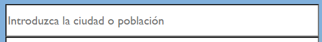
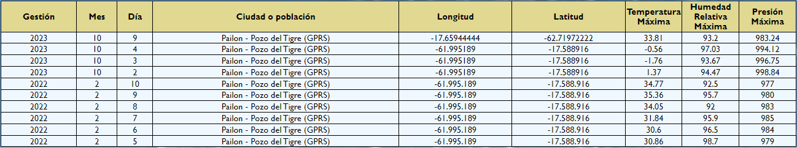
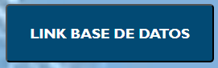
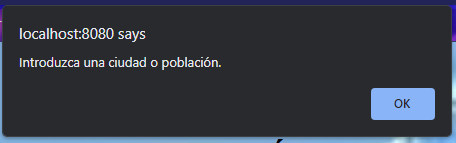
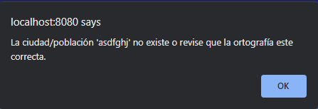
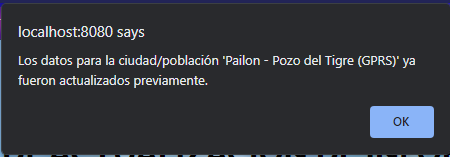
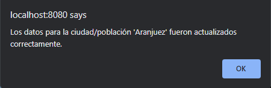
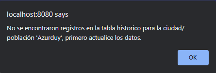

| La aplicación web permite realizar actualizaciones a una base de datos y desplegar la información sobre datos climáticos de las distintas ciudades o poblaciones de Bolivia. La fuente de donde se obtuvieron los datos climáticos es: tomorrow.io |
| Imagen de referencia | Descripción |
|---|---|
|  | Introducir o seleccionar una ciudad o población de Bolivia. |
| Realiza la actualización de datos climáticos respecto a la ciudad o población que se seleccionó, los datos que se actualizan son de la fecha actual. | |
| Realiza la presentación de los registros históricos relacionados con esa ubicación en el mismo formato que la tabla de entrada. Sin embargo, se limita a mostrar solo los últimos 10 registros, incluso si hay más disponibles en la base de datos, lo que ofrece a los usuarios una visión rápida de la información histórica más reciente para la ciudad o población seleccionada. |
| Columna | Descripción |
|---|---|
| Gestión | Año actual, año de la consulta. |
| Mes y día | Mes y dia de la consulta. |
| Latitud y longitud | Ubicación de la ciudad o población consultada. |
| Temperatura máxima | Valor máximo de temperatura en el día consultado. |
| Humedad relativa máxima | Valor máximo registrado en el día de la consulta, expresado en porcentaje. |
| Presión máxima | Valor máximo registrado en el día de la consulta, expresado en mm de Hg. |
| Ejemplo |
|---|
|  |
| Imagen de referencia | Descripción |
|---|---|
| Redirecciona al usuario a la página de donde se obtuvieron los datos. | |
|  | Redirecciona al usuario a la base de datos del sistema. |
| Redirecciona al usuario a la página de información de la aplicación. |
| Imagen de referencia | Descripción |
|---|---|
|  | La alerta será desplegada si el usuario no introduce ni selecciona una ciudad o población. |
|  | La alerta será desplegada si el usuario introduce una ciudad o población que no existe. |
|  | La alerta será desplegada si el usuario ya 'actualizó los datos' en el día. No se permite la actualización de datos de la misma ciudad o población en el mismo día. |
|  | La alerta será desplegada si los datos fueron actualizados/guardados correctamente en la base de datos. |
|  | La alerta será desplegada si el usuario presiona 'presentar datos', pero no se realizó ninguna actualización hasta la fecha. |